Documento de Teste — Bug Report
Testado em QA (mb.devtrust.cv) a 14/10/2026, com base na Especificação Técnica Funcional de Missão de Serviço. Vinte defeitos: quatro de severidade alta (o anexo opcional impede gravar a missão, erro 500 ao gravar uma segunda vez, emails aos prestadores em erro e cabimento gerado sem número), oito médios e oito baixos.
Funcionalidade: Lista Geral MS → Lista · Severidade: Média · Estado: Aberto
Resultado obtido: A lista mostra apenas 10 missões (14/2026 a 5/2026) e não tem paginação. A API GET /api/missao-servico devolve totalElements: 14, totalPages: 2; as missões 1/2026 a 4/2026 só aparecem através do filtro.
Evidência
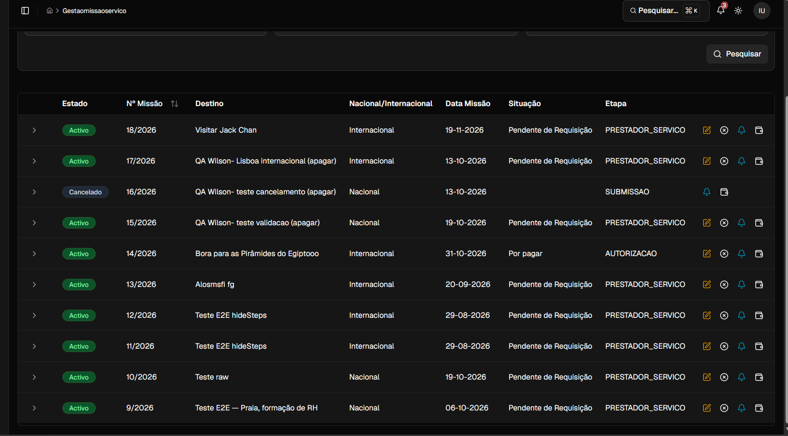
MS-001 — lista com 10 missões
Funcionalidade: Lista Geral MS → Lista · Severidade: Baixa · Estado: Aberto
Resultado esperado: Coluna "Período Missão" com data início e data fim.
Resultado obtido: Coluna "Data Missão" com uma única data (a API só devolve dataMissao).
Evidência
MS-002 — lista com coluna "Data Missão"
OBS: Mostrar data início data fim de missão no período mesmo sendo de 1 dia apenas
Funcionalidade: Lista Geral MS → Lista · Severidade: Baixa · Estado: Aberto
Resultado obtido: Etapa aparece como código (PRESTADOR_SERVICO, AUTORIZACAO, SUBMISSAO) e fica cortada; a API já devolve etapaDesc. O mesmo acontece na Aprovação RH: "Parecer UGAL que abriu esta etapa: FAVORAVEL".
Evidência
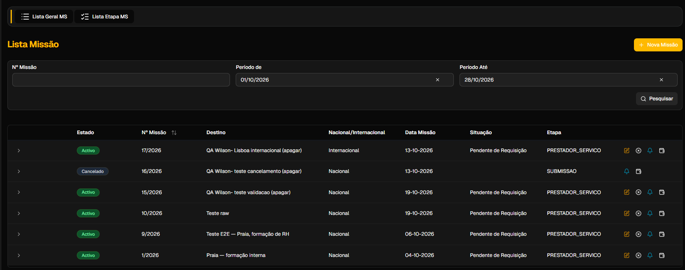
MS-006 — coluna Etapa com códigos
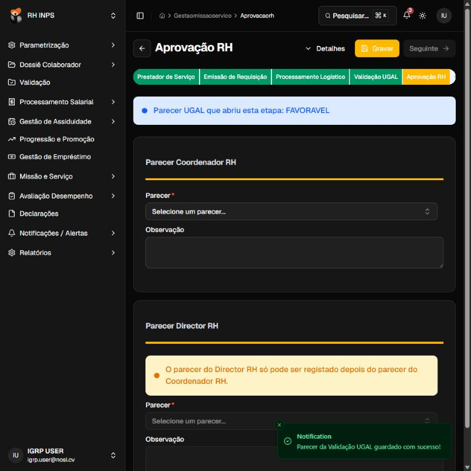
MS-006 — fAVORAVEL na Aprovação RH
Funcionalidade: Nova Missão → Autorização · Severidade: Média · Estado: Aberto
Resultado esperado: Preenchido automaticamente com o utilizador que submete, editável, de preenchimento obrigatório.
Resultado obtido: Campo vazio e sem asterisco de obrigatório, embora a gravação o exija.
Evidência
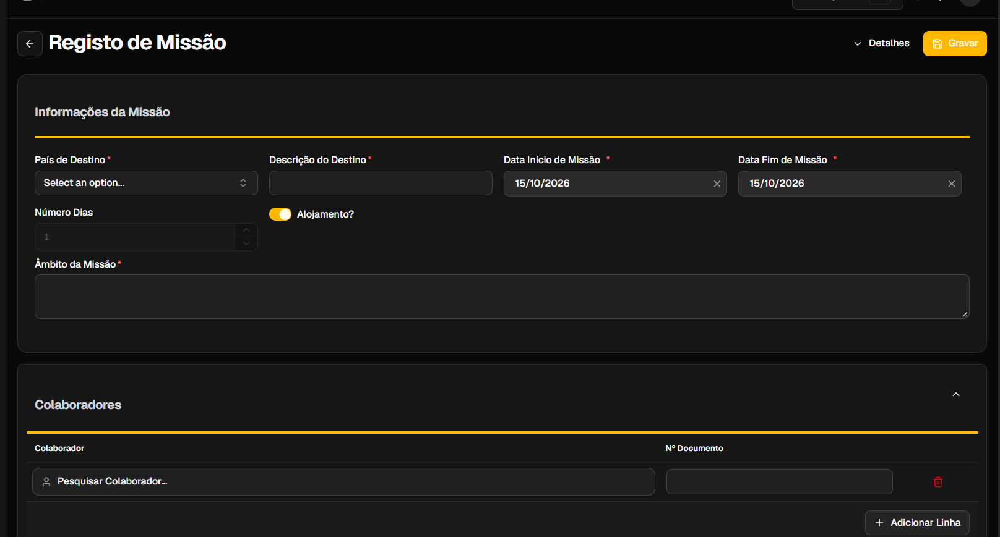
MS-005 — formulário Registo de Missão
MS-005 — secção Autorização com campo vazio
Funcionalidade: Nova Missão → Gravar · Severidade: Média · Estado: Aberto
Resultado obtido:
Evidência
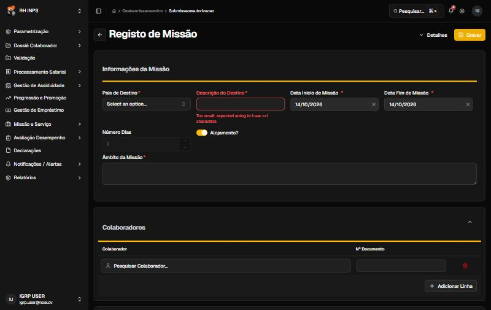
MS-007 — gravar com formulário vazio
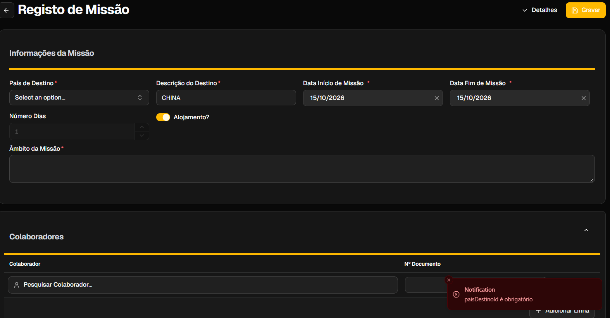
MS-007 — paisDestinoId é obrigatório
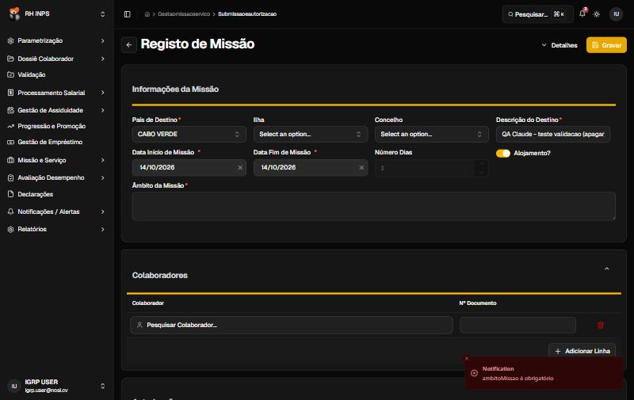
MS-007 — erro de Âmbito mostrado no País de Destino
Funcionalidade: Nova Missão → Anexar Documento · Severidade: Alta · Estado: Aberto
Resultado esperado: Anexo opcional; a missão grava sem documento.
Resultado obtido: O formulário traz uma linha de documento vazia por defeito; ao gravar o servidor devolve 400 "Campo 'tpDocumentoId': tpDocumentoId is mandatory". Só grava depois de apagar a linha, e a linha vazia volta a aparecer ao editar a missão.
Endpoint: POST /api/missao-servico/submissao → 400
Evidência
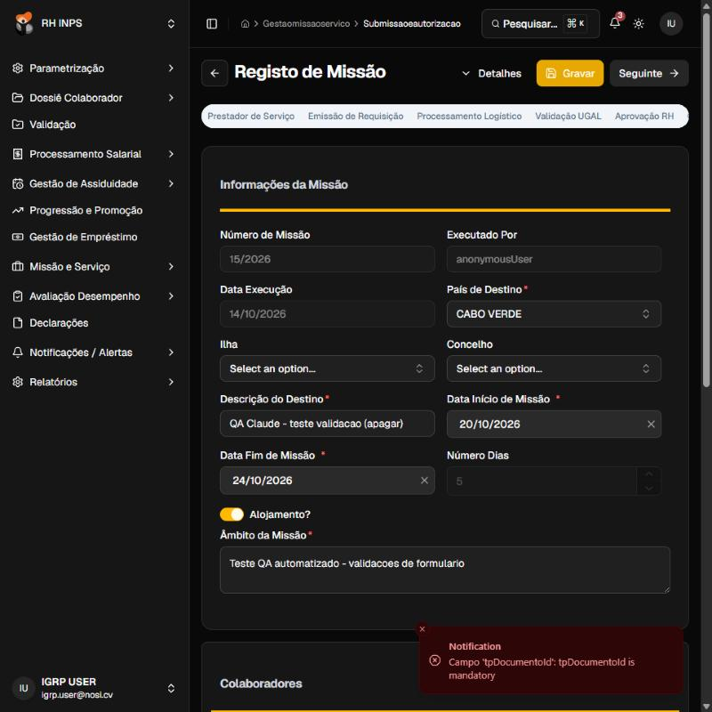
MS-008 — gravar com a linha de anexo vazia
OBS: É conveniente eliminar a linha vazia que aparece em secção de Documento
Funcionalidade: Registo de Missão → Gravar / Seguinte · Severidade: Alta · Estado: Aberto
Resultado obtido: Na missão 15/2026, após adicionar um colaborador e gravar (200), voltar a carregar em "Gravar" ou "Seguinte" sem recarregar a página devolve "Ocorreu um erro inesperado ao gravar os dados." Só funciona depois de recarregar a página.
Endpoint: PUT /api/missao-servico/{uuid}/submissao → 500
Evidência
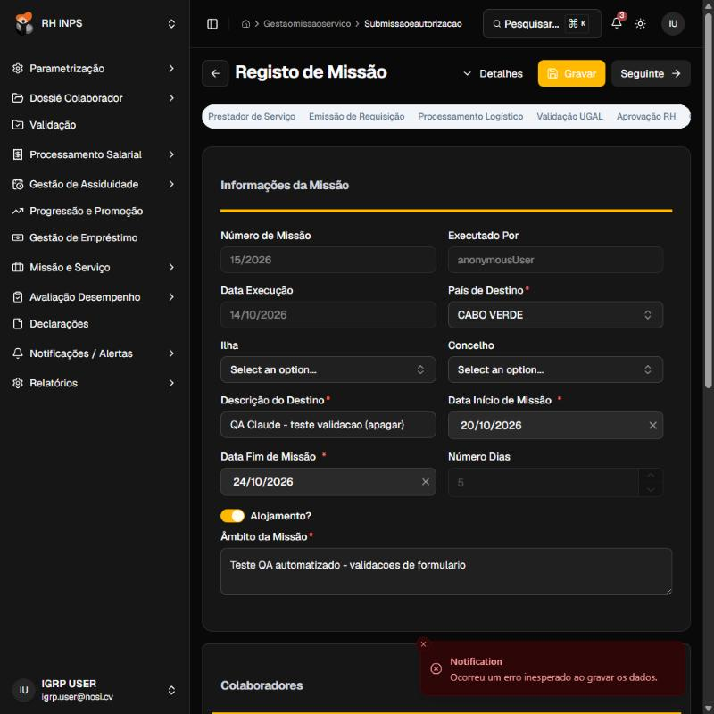
MS-010 — erro ao carregar em Seguinte
Funcionalidade: Etapa Prestadores Serviço → Notificação · Severidade: Alta · Estado: Aberto
Resultado esperado: Pedido de proposta enviado a cada email ativo do prestador; colaborador notificado por email.
Resultado obtido:
Evidência
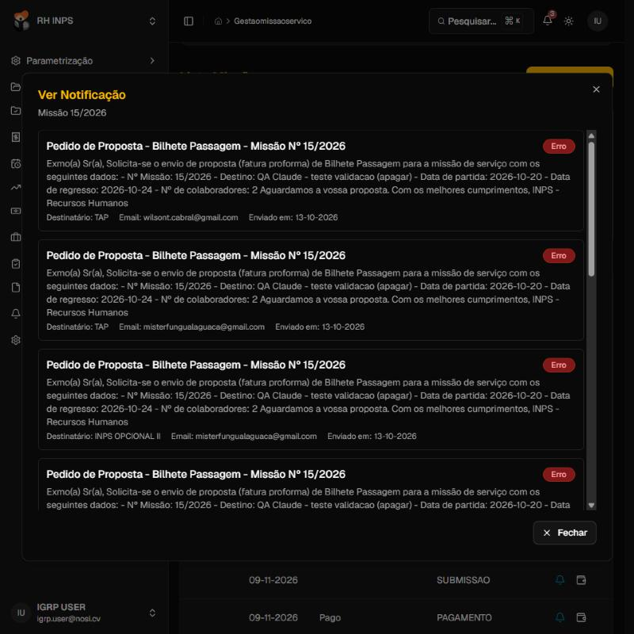
MS-012 — ver Notificação da missão 15/2026
Funcionalidade: Logística → Ajuda de Custo · Severidade: Média · Estado: Aberto
Resultado esperado: Valor diário preenchido automaticamente pela parametrização (função, nacional/internacional); dados gravados visíveis ao reabrir.
Resultado obtido:
Evidência
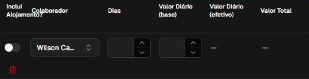
MS-013 — valor diário base vazio
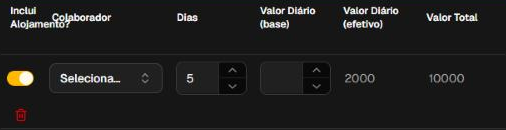
MS-013 — colaborador e valor base vazios após gravar
OBS: Não consegui gravar uma parametrização de ajuda de custo a funcionalidade esta com erro, por isso não foi possível validar esse BUG
Funcionalidade: Cabimentação / Autorização → Lista · Severidade: Baixa · Estado: Aberto
Resultado obtido:
Evidência
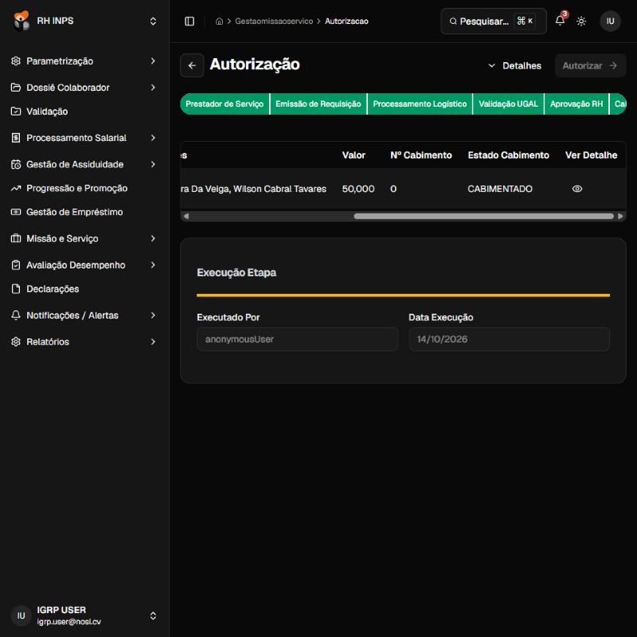
MS-015 — autorização
Funcionalidade: Lista Geral MS → Cancelar Missão · Severidade: Baixa · Estado: Aberto
Resultado obtido:
Evidência
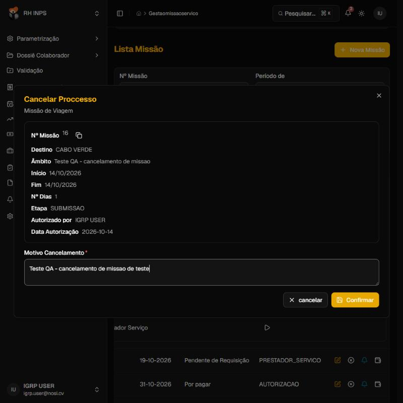
MS-016 — diálogo de cancelamento da missão 16/2026
Funcionalidade: Logística → Alojamento · Severidade: Média · Estado: Aberto
Resultado esperado: Data início/fim preenchidas com as datas da missão (editáveis); Valor Total = valor diário × nº dias.
Resultado obtido: No "Adicionar Alojamento" as datas vêm vazias. Com valor diário 10 000 e 14/10 a 16/10 (3 dias), o Valor Total fica vazio e a API grava valorTotal: 0 (nrDias: 3). O alojamento é aceite sem valor total.
Evidência
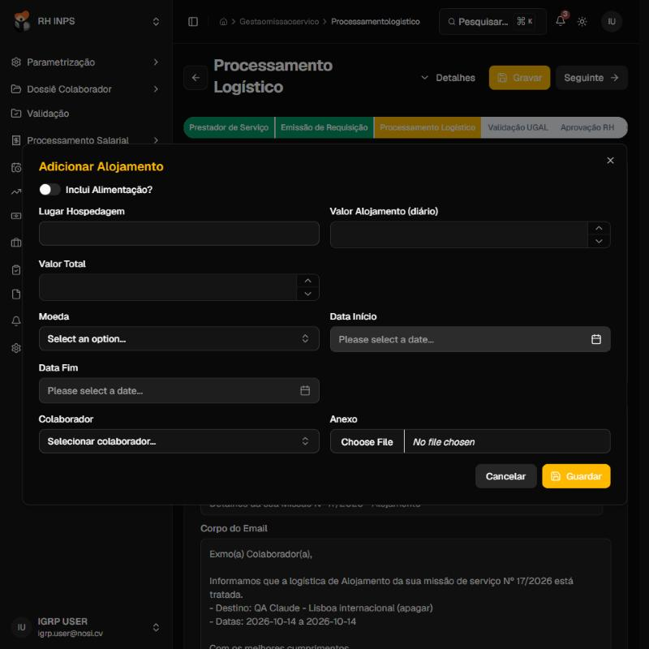
MS-017 — adicionar Alojamento com datas vazias
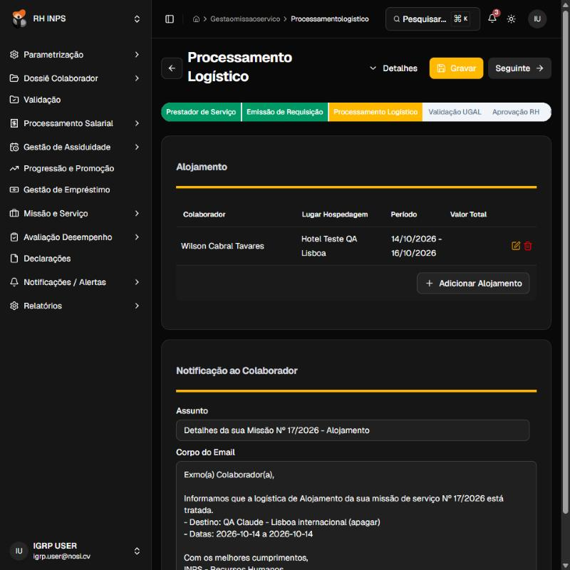
MS-017 — alojamento gravado sem Valor Total
Funcionalidade: Listas e notificações · Severidade: Média · Estado: Aberto
Resultado obtido: Missões de 14-10-2026 (16/2026, 17/2026) aparecem com 13-10-2026 e a 15/2026 (início 20-10-2026) com 19-10-2026 na Lista Geral (Data Missão), na Lista Etapa MS (Data Início/Fim) e em Ver Notificação ("Enviado em"). A API devolve 2026-10-14.
Evidência
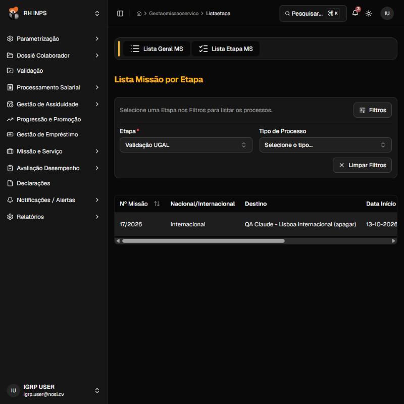
MS-018 — lista Etapa MS da 17/2026
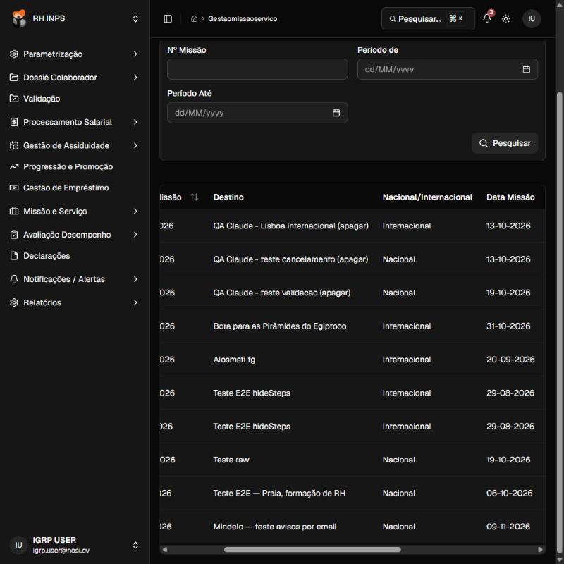
MS-018 — lista Geral com 13-10-2026 e 19-10-2026
MS-018 — enviado em 13-10-2026
Funcionalidade: Registo de Missão · Severidade: Média · Estado: Aberto
Resultado esperado: Missão finalizada/paga só em consulta.
Resultado obtido: Na lista a 7/2026 (Finalizado, Pago) não tem "Editar", mas abrindo o endereço /gestaomissaoservico/submissaoeautorizacao?missaoUuid=… o formulário fica editável, com "Gravar" e "Seguinte" ativos (não foi gravado nada).
Evidência
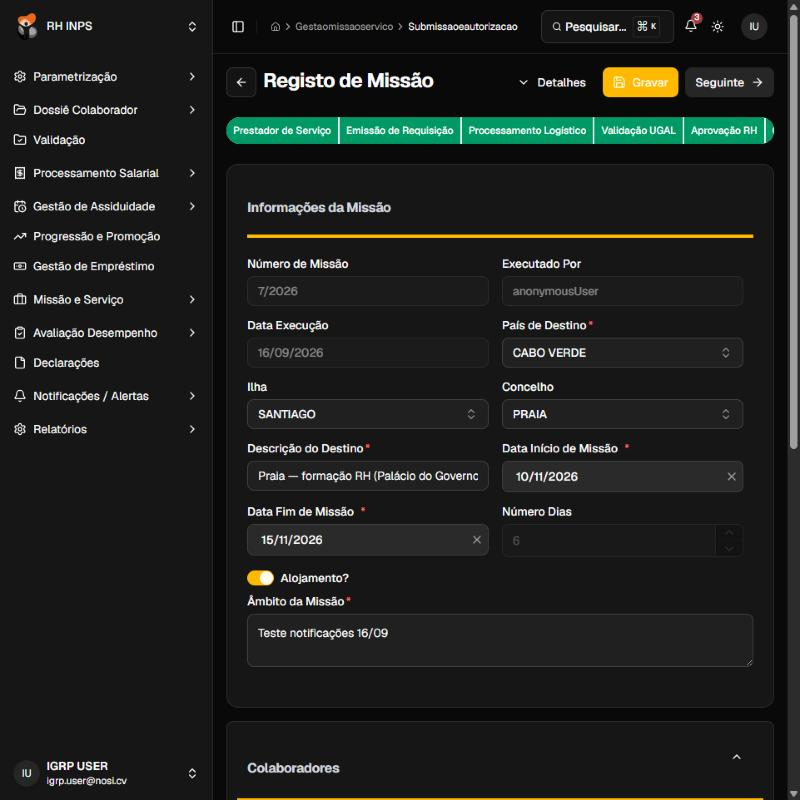
MS-019 — missão 7/2026 editável
Funcionalidade: Gestão de Prestadores · Severidade: Baixa · Estado: Aberto
Resultado obtido:
Evidência
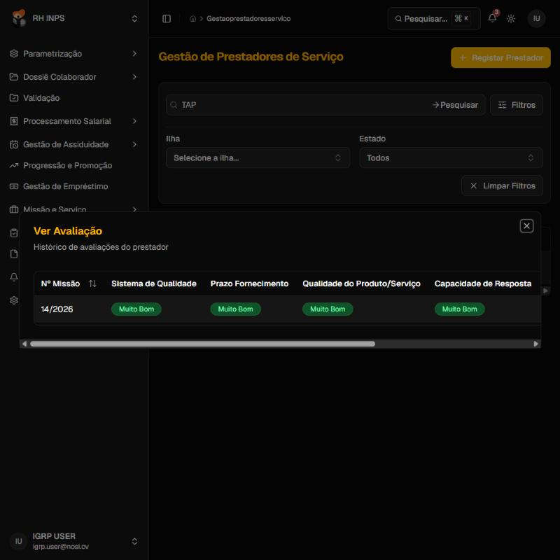
MS-020 — ver Avaliação da TAP
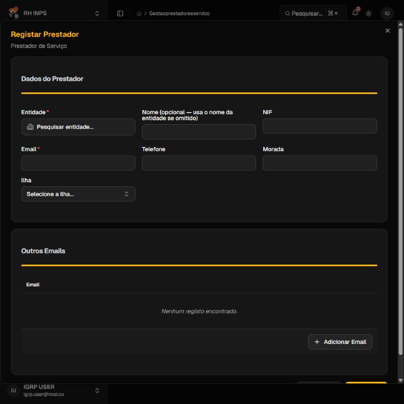
MS-020 — registar Prestador sem Estado
Funcionalidade: Etapa Prestadores Serviço → Email · Severidade: Baixa · Estado: Aberto
Resultado esperado: Além dos emails registados do prestador, permitir introduzir outro email para o pedido de proposta.
Resultado obtido: O campo Email só deixa escolher os emails já registados do prestador (ex.: TAP com dois emails).
Evidência
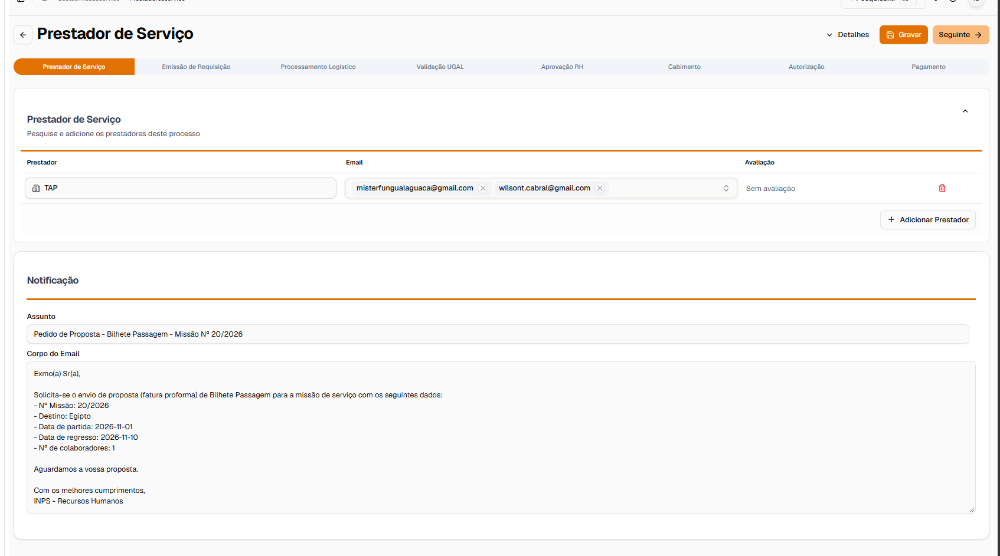
MS-023 — etapa Prestador de Serviço da missão 20/2026
Funcionalidade: Logística → Alojamento → Colaborador · Severidade: Média · Estado: Aberto
Resultado esperado: Permitir associar um ou mais colaboradores a cada alojamento.
Resultado obtido: O campo Colaborador do "Adicionar Alojamento" só aceita um colaborador.
Evidência
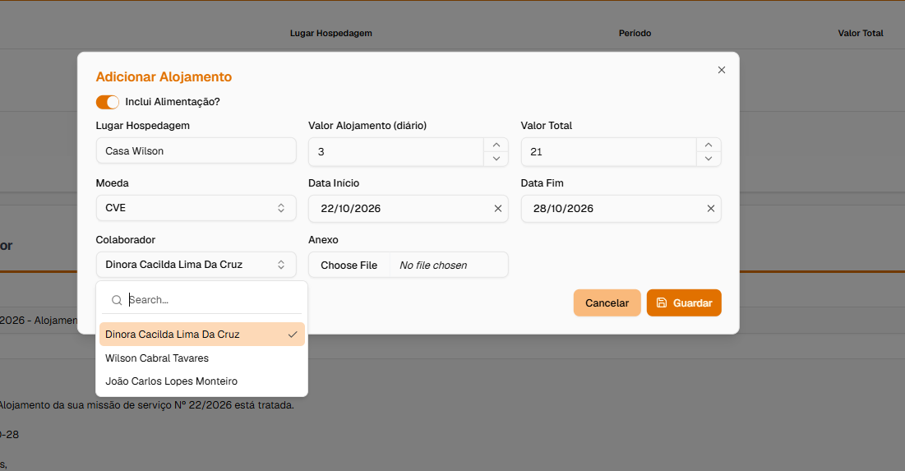
MS-027 — adicionar Alojamento com um só colaborador
Funcionalidade: Logística → navegação entre etapas · Severidade: Média · Estado: Aberto
Resultado obtido: Ao voltar a uma etapa anterior e avançar de novo, os dados do colaborador perdem-se.
Funcionalidade: Validação UGAL → Documentos do Processo · Severidade: Média · Estado: Aberto
Resultado esperado: Autorização: documento anexado no registo da missão; Requisição: documento extraído na Emissão Requisição; Factura: fatura anexada na Logística. Sem documento, mostrar "Nenhum documento anexado".
Resultado obtido: Autorização mostra "Documento Financeiro" e Requisições mostra "Documento Emissão Requisição", sem esses documentos terem sido introduzidos.
Evidência
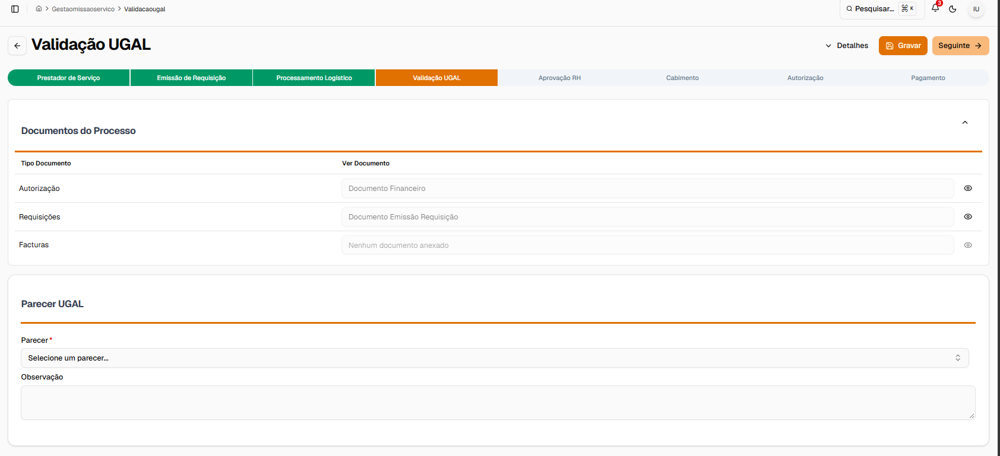
MS-024 — Documentos do Processo na Validação UGAL
Funcionalidade: Aprovação RH → Seguinte (depois de voltar atrás) · Severidade: Alta · Estado: Aberto
Resultado esperado: Depois de voltar à Aprovação RH, poder avançar, ou não permitir voltar a uma etapa já concluída.
Resultado obtido: Com o processo já em Cabimento, ao voltar à Aprovação RH e carregar em Seguinte, o servidor devolve 400: "O parecer só pode ser emitido com o processo na etapa APROVACAO_RH (etapa actual: CABIMENTO)". Não é possível avançar.
Endpoint: PUT /inps-api/api/v1/missao-servico/{uuid}/processos/BILHETE_PASSAGEM/aprovacao-rh → 400
Evidência
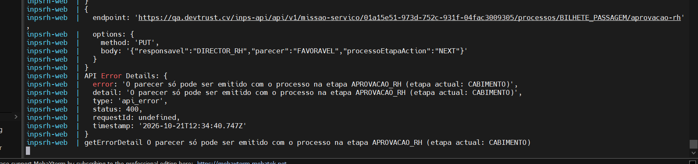
MS-025 — log da interface: parecer do Director recusado com o processo em CABIMENTO
Funcionalidade: Aprovação RH → Histórico · Severidade: Baixa · Estado: Aberto
Resultado esperado: Mostrar a descrição (ex.: "Coordenador RH").
Resultado obtido: Mostra "Responsável: COORDENADOR_RH".
Evidência
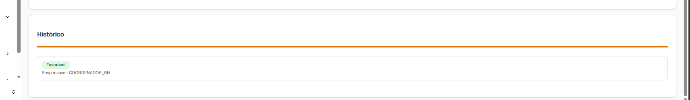
MS-026 — histórico com Responsável COORDENADOR_RH
Funcionalidade: Gestão de Prestadores → Lista · Severidade: Baixa · Estado: Aberto
Resultado esperado: Coluna Nome com o nome da entidade do sistema financeiro.
Resultado obtido: Quando se preenche o "Nome (opcional)", a lista mostra esse nome em vez do nome da entidade (ex.: "QA Claude Prestador Teste (apagar)", entidade Agecabo).
Evidência
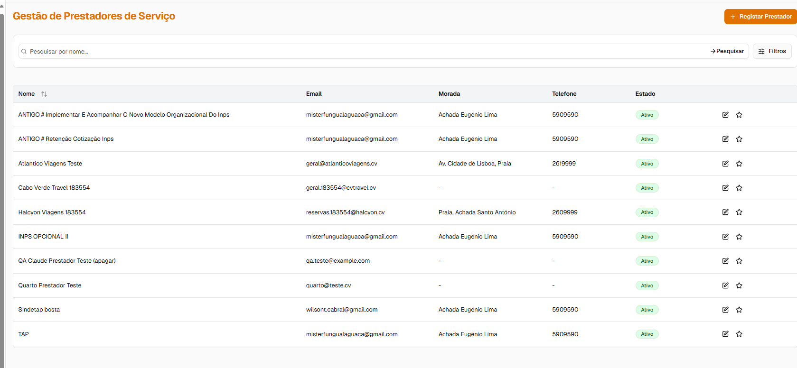
MS-029 — lista de prestadores
Funcionalidade: Gestão de Prestadores → Ver Avaliação · Severidade: Baixa · Estado: Aberto
Resultado esperado: O X para fechar fica fixo no canto do diálogo.
Resultado obtido: Ao deslocar a tabela na horizontal, o X desloca-se com o conteúdo e deixa de estar visível no canto.
Evidência
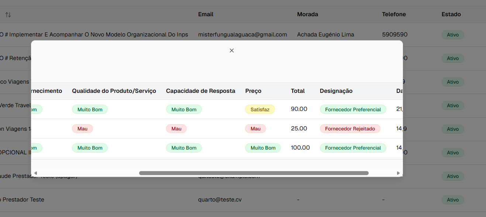
MS-030 — Ver Avaliação com o X deslocado
Funcionalidade: Parametrização → Missão de Serviço → Ajuda de Custo · Severidade: Alta · Estado: Aberto
Resultado esperado: Gravar os valores por carreira (nacional/estrangeiro), usados no cálculo automático do Valor Diário da Ajuda de Custo (ver MS-013).
Resultado obtido: Ao gravar (carreiraId: 6, valorNacional: 1500, valorEstrangeiro: 5000) o pedido devolve 404. O endpoint chamado não tem /api/v1/, ao contrário dos restantes pedidos do módulo.
Endpoint: POST https://qa.devtrust.cv/inps-api/missao-servico/configuracao-ajuda-custo → 404
Funcionalidade: Nova Missão → Anexar Documento → Tipo Documento · Severidade: Baixa · Estado: Aberto
Resultado esperado: Listar apenas os tipos de documento de Missão de Serviço.
Resultado obtido: A lista mostra tipos de outros módulos: "Documento Análise Reforço", "Documento Elaboração Contrato Reforço", "Documento Pedido Reforço", "CNI", "Cartão Nacional de Identificação", "Omanui Omaps Iomas", entre outros.
Evidência
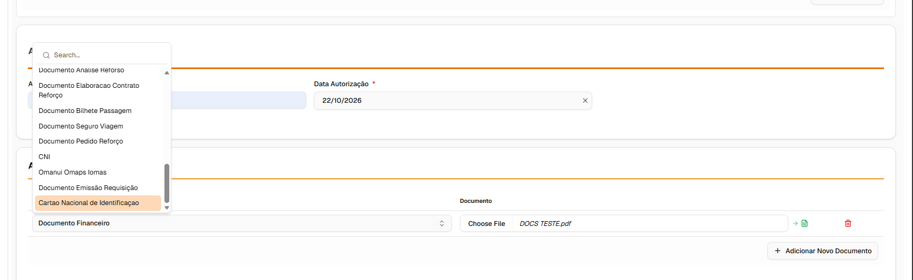
MS-022 — lista de Tipo Documento com tipos de outros módulos
Funcionalidade: Etapa Prestadores Serviço → Email · Severidade: Baixa · Estado: Aberto
Resultado esperado: Além dos emails registados do prestador, permitir introduzir outro email para o pedido de proposta.
Resultado obtido: O campo Email só deixa escolher os emails já registados do prestador (ex.: TAP com dois emails).
Evidência
MS-023 — etapa Prestador de Serviço da missão 20/2026
Funcionalidade: Logística → Alojamento → Colaborador · Severidade: Média · Estado: Aberto
Resultado esperado: Permitir associar um ou mais colaboradores a cada alojamento.
Resultado obtido: O campo Colaborador do "Adicionar Alojamento" só aceita um colaborador.
Evidência
MS-027 — adicionar Alojamento com um só colaborador
Funcionalidade: Logística → navegação entre etapas · Severidade: Média · Estado: Aberto
Resultado obtido: Ao voltar a uma etapa anterior e avançar de novo, os dados do colaborador perdem-se.
Funcionalidade: Validação UGAL → Documentos do Processo · Severidade: Média · Estado: Aberto
Resultado esperado: Autorização: documento anexado no registo da missão; Requisição: documento extraído na Emissão Requisição; Factura: fatura anexada na Logística. Sem documento, mostrar "Nenhum documento anexado".
Resultado obtido: Autorização mostra "Documento Financeiro" e Requisições mostra "Documento Emissão Requisição", sem esses documentos terem sido introduzidos.
Evidência
MS-024 — Documentos do Processo na Validação UGAL
Funcionalidade: Aprovação RH → Seguinte (depois de voltar atrás) · Severidade: Alta · Estado: Aberto
Resultado esperado: Depois de voltar à Aprovação RH, poder avançar, ou não permitir voltar a uma etapa já concluída.
Resultado obtido: Com o processo já em Cabimento, ao voltar à Aprovação RH e carregar em Seguinte, o servidor devolve 400: "O parecer só pode ser emitido com o processo na etapa APROVACAO_RH (etapa actual: CABIMENTO)". Não é possível avançar.
Endpoint: PUT /inps-api/api/v1/missao-servico/{uuid}/processos/BILHETE_PASSAGEM/aprovacao-rh → 400
Evidência
MS-025 — log da interface: parecer do Director recusado com o processo em CABIMENTO
Funcionalidade: Aprovação RH → Histórico · Severidade: Baixa · Estado: Aberto
Resultado esperado: Mostrar a descrição (ex.: "Coordenador RH").
Resultado obtido: Mostra "Responsável: COORDENADOR_RH".
Evidência
MS-026 — histórico com Responsável COORDENADOR_RH
Funcionalidade: Gestão de Prestadores → Lista · Severidade: Baixa · Estado: Aberto
Resultado esperado: Coluna Nome com o nome da entidade do sistema financeiro.
Resultado obtido: Quando se preenche o "Nome (opcional)", a lista mostra esse nome em vez do nome da entidade (ex.: "QA Claude Prestador Teste (apagar)", entidade Agecabo).
Evidência
MS-029 — lista de prestadores
Funcionalidade: Gestão de Prestadores → Ver Avaliação · Severidade: Baixa · Estado: Aberto
Resultado esperado: O X para fechar fica fixo no canto do diálogo.
Resultado obtido: Ao deslocar a tabela na horizontal, o X desloca-se com o conteúdo e deixa de estar visível no canto.
Evidência
MS-030 — Ver Avaliação com o X deslocado
Funcionalidade: Parametrização → Missão de Serviço → Ajuda de Custo · Severidade: Alta · Estado: Aberto
Resultado esperado: Gravar os valores por carreira (nacional/estrangeiro), usados no cálculo automático do Valor Diário da Ajuda de Custo (ver MS-013).
Resultado obtido: Ao gravar (carreiraId: 6, valorNacional: 1500, valorEstrangeiro: 5000) o pedido devolve 404. O endpoint chamado não tem /api/v1/, ao contrário dos restantes pedidos do módulo.
Endpoint: POST https://qa.devtrust.cv/inps-api/missao-servico/configuracao-ajuda-custo → 404
Evidência
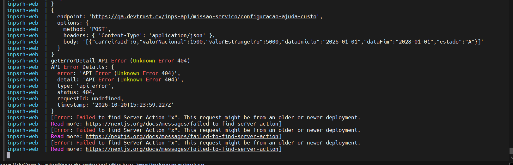
Evidência
MS-021 — log da interface: POST configuracao-ajuda-custo devolve 404